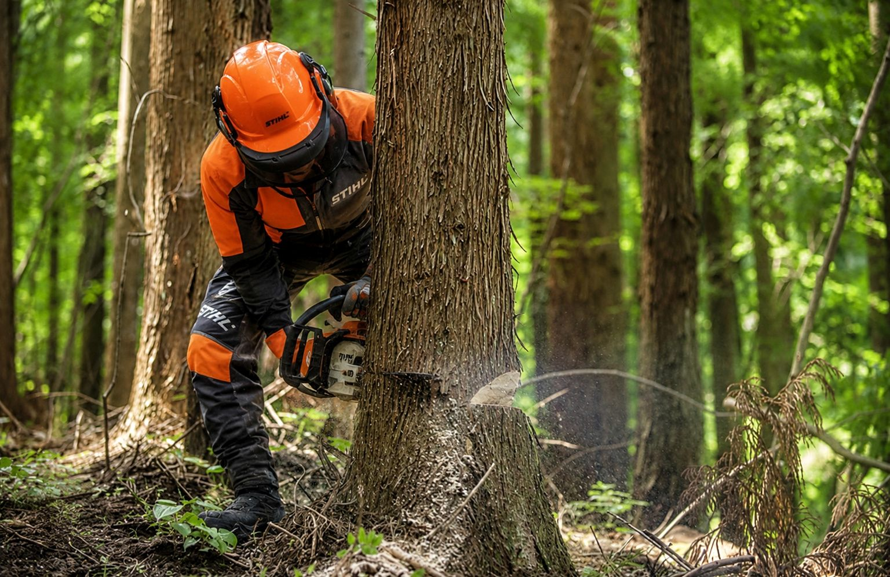
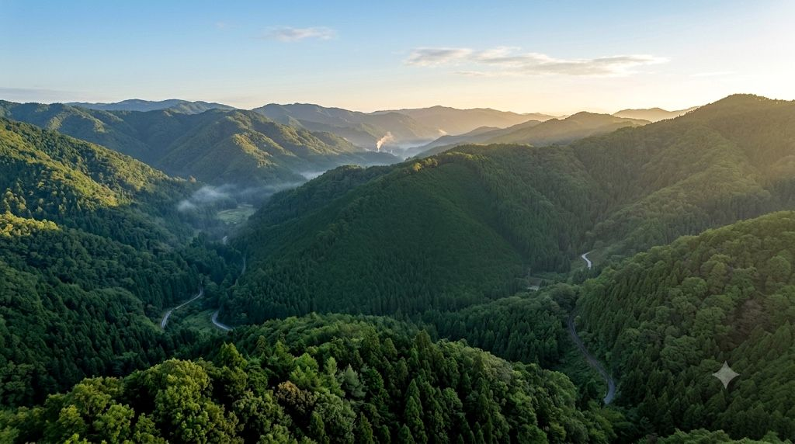
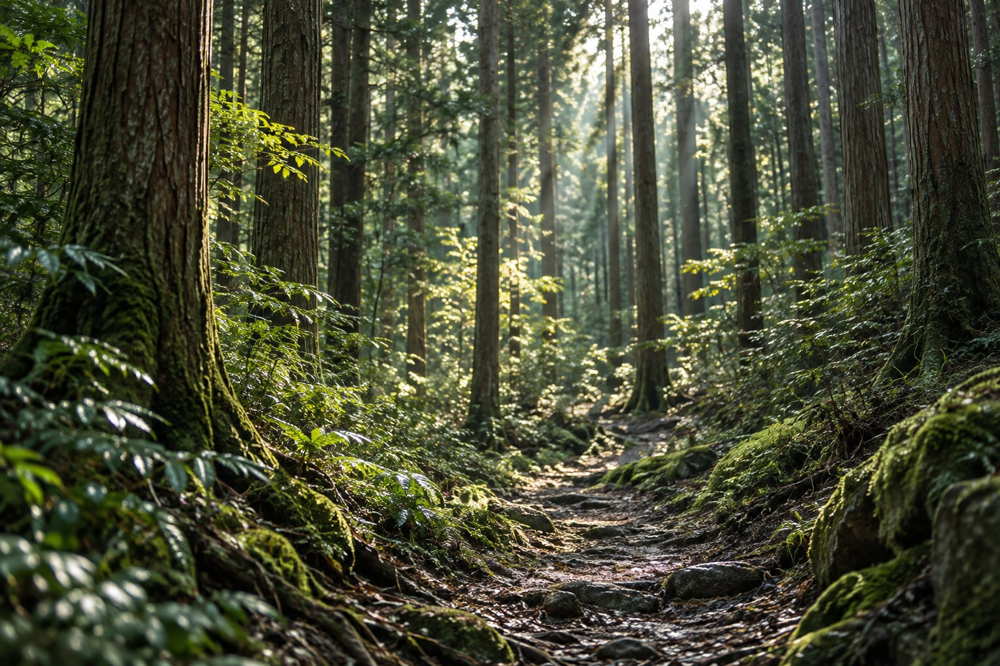
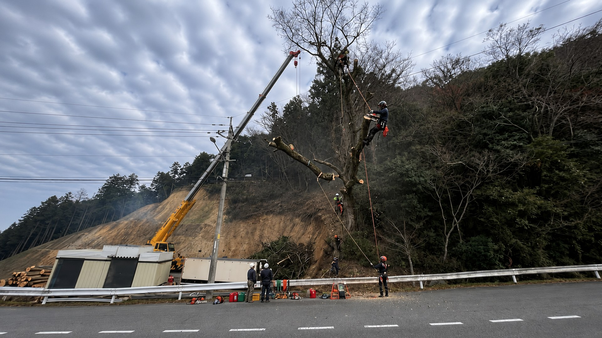
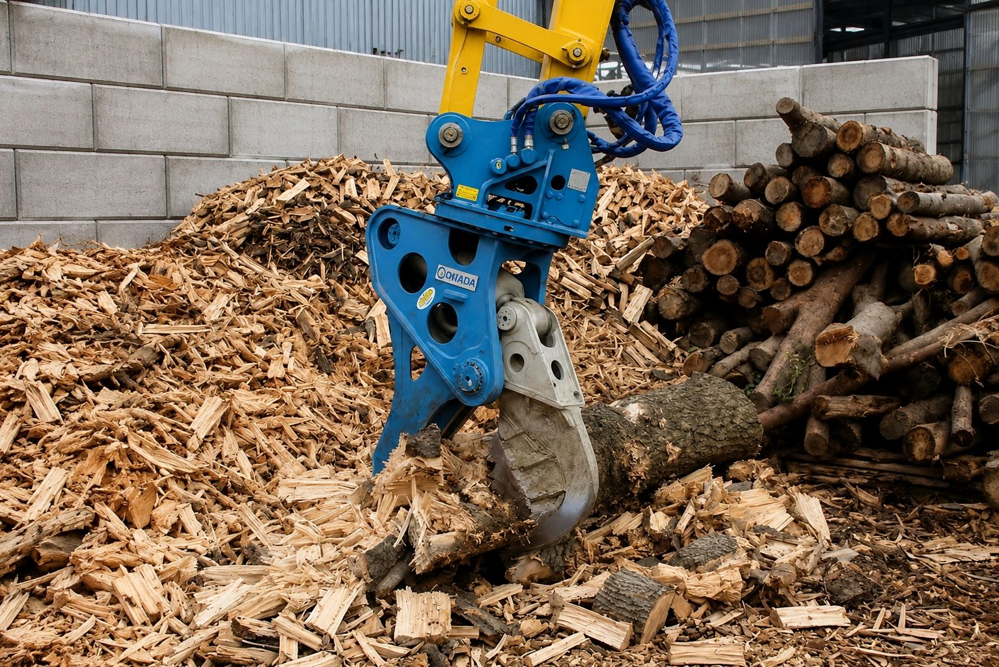
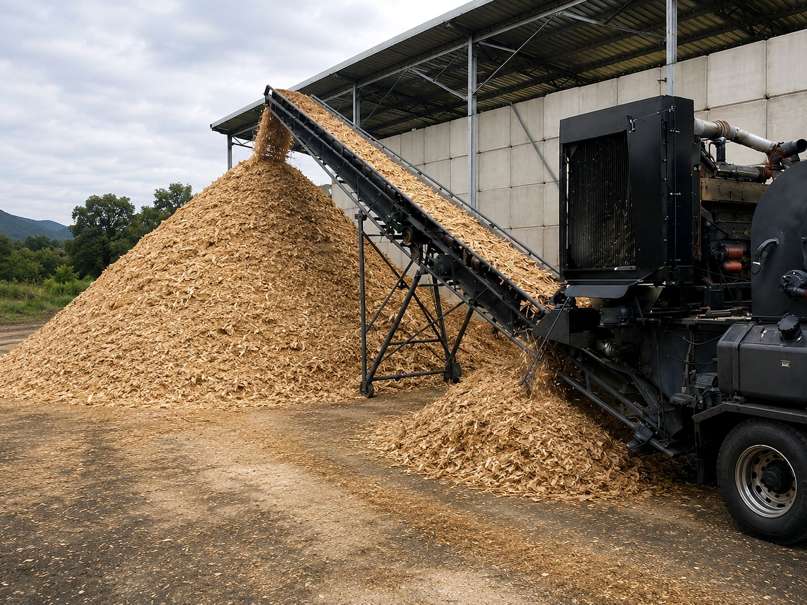
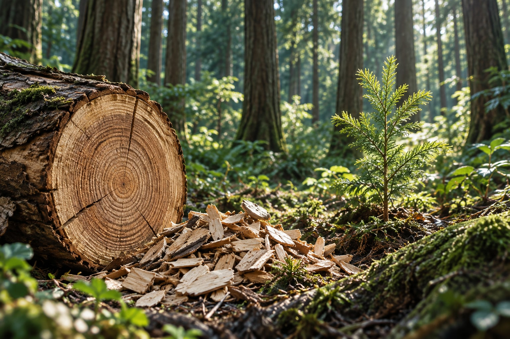
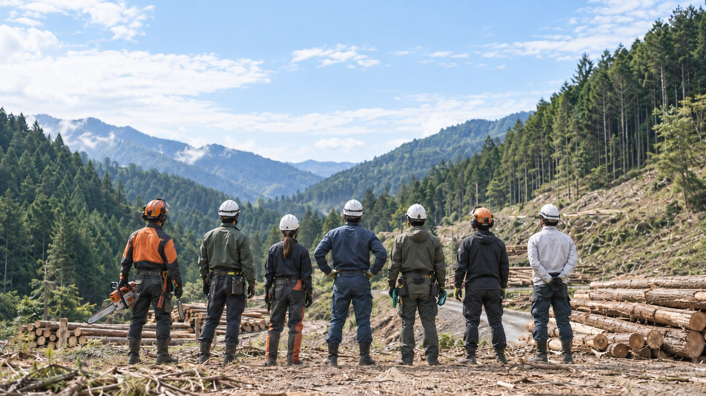

FOREST TO RESOURCE
森林から資源へ。未来へつなぐ、Clearthの一貫対応。
森林整備から木材の資源化、バイオマス燃料供給まで。
森林資源を未来へつなぎます。

OUR SERVICES
森林から資源へ。
Clearthの8つの事業
森林を整え、木材を次の資源へ。
8つの事業がひとつの流れをつくります。




WORKS
施工実績
伐採・森林整備の現場を、施工前後の写真でご紹介します。


01
危険木伐採
家屋まわりの危険木伐採


03
森林整備
森林整備・伐採


04
支障木伐採・搬出
住宅裏の支障木伐採・搬出

FAQ
よくあるご質問
ご相談前によくいただく質問から、3つをご紹介します。
立木はどのような状態でも買取できますか？
樹種や搬出条件などを確認したうえで、買取可能か判断します。
家の近くにある危険な木も伐採できますか？
住宅や建物の近くも、現場を確認して対応方法をご提案します。
どのような木材を持ち込めますか？
丸太、枝葉、根株、竹・竹根などを受け入れています。状態により受入条件が異なるため、事前にご確認ください。